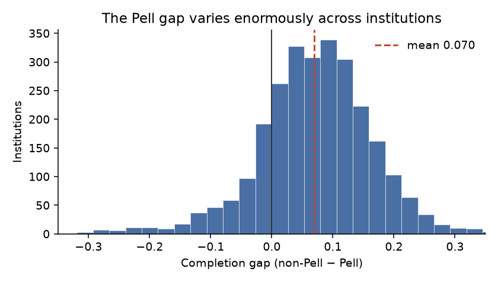
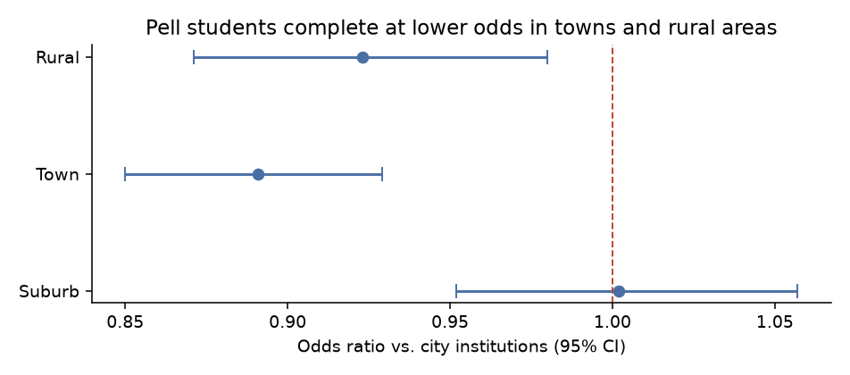
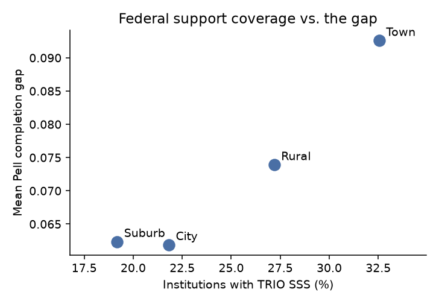

An institution-level analysis of completion disparities across 2,699 U.S. colleges.
Students receiving Pell Grants complete degrees at lower rates than their peers. The usual explanation is compositional: Pell students concentrate at community colleges and less-resourced institutions, so the gap is really a story about where they enroll. This analysis tests that directly, and finds it mostly wrong.
Across 2,699 institutions, the mean gap between non-Pell and Pell completion is 7.0 percentage points. But the spread is enormous — a standard deviation of 12.7 points, and at a quarter of institutions the gap is at or below one point. At some, Pell students complete at higher rates than their peers.

That variance is the whole premise. If the gap were a fixed property of being low-income, it would look the same everywhere. It doesn't, which means institutional context is doing something — and the question is what.
The model is a binomial GLM fit on counts rather than rates, so institutions are weighted by cohort size. Critically, it includes each institution's non-Pell completion rate as a covariate. That turns every other coefficient into a conditional effect: not "does this school do well," but "does it do well for Pell students given how well it does for everyone else."
Non-Pell completion rate carries an odds ratio of 15.6 (CI 12.0–20.2). Once you know how well an institution serves its non-Pell students, sector and level tell you almost nothing more. Public versus private nonprofit is null. Two-year versus four-year is null.
The compositional story is mostly wrong, but not in the direction people expect. It isn't that Pell students are at bad institutions — it's that the gap tracks overall institutional effectiveness rather than institutional type.

Pell students at town institutions complete at 0.89 times the odds of those at city institutions (p < .001); at rural institutions, 0.92 (p = .008). Suburbs are indistinguishable from cities. This holds after controlling for the dominant covariate above, which makes it the most interesting result here — geography survives when institutional type does not.
K-means on structural features produces silhouette scores rising monotonically from 0.200 at k=2 to 0.415 at k=20, with no elbow and no value above 0.5. There is no natural partition. Institutions vary along a continuum of effectiveness rather than falling into discrete types — which is exactly what finding 1 implies.
OMAWDN8 counts any award. At for-profit two-year institutions, 72% of awards are certificates and 0.4% are bachelor's degrees; at private nonprofit four-years, those figures are 2.4% and 89%. "Completion" is not the same outcome at both. Certificate share was added as a covariate, and the award mix is reported alongside every sector comparison.
TRIO Student Support Services is the federal program aimed precisely at low-income and first-generation students. Matching 966 SSS grantees from USASpending (CFDA 84.042, FY2016–2020 activity) against the institution table gives 649 matched institutions in the modeling sample.

The intuitive audit hypothesis is that underserved areas lack federal resources. The data says the reverse: town institutions have both the highest TRIO coverage (32.5%) and the widest gap; cities and suburbs have the lowest coverage and the narrowest gaps.
In the model, holding TRIO status alongside everything else gives an odds ratio of 0.931 — TRIO institutions show lower conditional Pell completion. This is almost certainly selection rather than program failure. SSS is competitively awarded to institutions demonstrating need, so the coefficient marks barriers the covariates don't capture: local labor markets, student parental status, remediation rates, transportation. Nothing in this design can identify a program effect; that would require matching on pre-award characteristics or a discontinuity around funding thresholds.
| Finding | Odds ratio | Status |
|---|---|---|
| Non-Pell completion rate | 15.6 | Robust |
| Town vs. city | 0.89 | Robust |
| Rural vs. city | 0.92 | Robust |
| For-profit control | 1.33 | Robust |
| TRIO SSS status | 0.93 | Robust (selection) |
| Certificate share | 1.26 | Fragile across corrections |
| Open admission | 0.94 | Null |
| Private nonprofit; 2yr vs 4yr; suburb | — | Null |
Overdispersion is severe (Pearson χ²/df = 12.15), so reported p-values are the more conservative of HC1-robust and quasi-binomial for each coefficient. VIF maxes at 3.37. On a 20% holdout (n = 512), the model predicts institutional Pell completion with MAE 0.067 and correlation 0.864. Pseudo-R² saturates on grouped binomial data and is not reported.